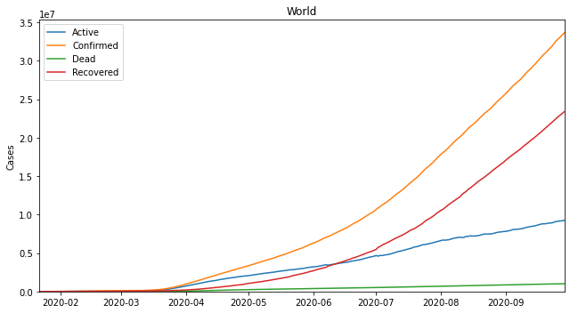
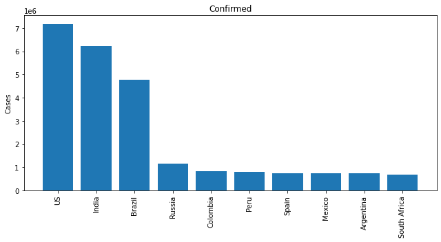
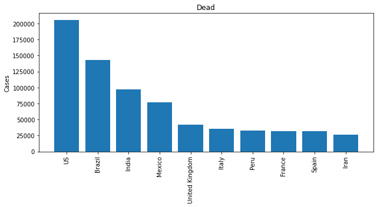
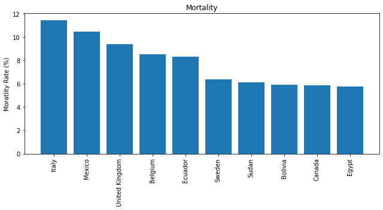
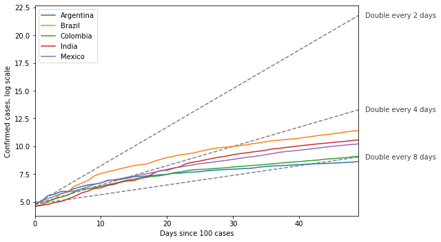
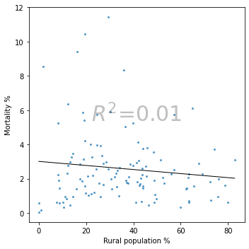
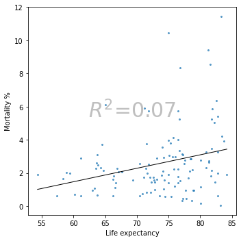
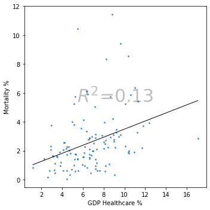

COVID-19 Global Trajectories & World Bank Socioeconomic Matrix
A multi-tiered epidemiological analytics platform integrating Johns Hopkins CSSE case surveillance with World Bank development metrics across 180+ sovereign nations. Features epidemic alignment from Day T0 (100 confirmed cases), exponential doubling benchmarks, and bivariate regression modeling against rural urbanization, healthcare expenditure, and GDP per capita.
Cross-Country Trajectory Explorer
Compare infection curves aligned by Day T0 (100 confirmed cases) against theoretical doubling velocities.
Confirmed Cases Aligned by Day T0 (Days Since 100 Cases)
Comparing standardized outbreak slope trajectories
World Bank Socioeconomic Correlation Studio
Cross-referencing pandemic severity indicators with sovereign development factors
| Factor | Conf | Dead | Health% | GDP | Life | Rural% |
|---|---|---|---|---|---|---|
| Confirmed / M | 1.00 | 0.45 | -0.16 | 0.34 | 0.36 | -0.46 |
| Dead / M | 0.45 | 1.00 | 0.05 | 0.18 | 0.39 | -0.37 |
| GDP / Cap | 0.34 | 0.18 | 0.24 | 1.00 | 0.69 | -0.62 |
| Life Expectancy | 0.36 | 0.39 | 0.49 | 0.69 | 1.00 | -0.63 |
| Rural Pop % | -0.46 | -0.37 | -0.21 | -0.62 | -0.63 | 1.00 |
Rural Population % vs Confirmed Cases / M
Linear regression line with empirical country scatter points
Pandemic Visual Analytics Gallery
High-resolution graphics exported directly from exploratory notebooks








Country Statistics & Socioeconomic Indicators
Processed sovereign metrics comparing total confirmed cases, fatalities, recovery rate, and rural demographics
| Country | Continent | Confirmed Cases | Deaths | Recovered | Mortality Rate | Rural Pop % |
|---|